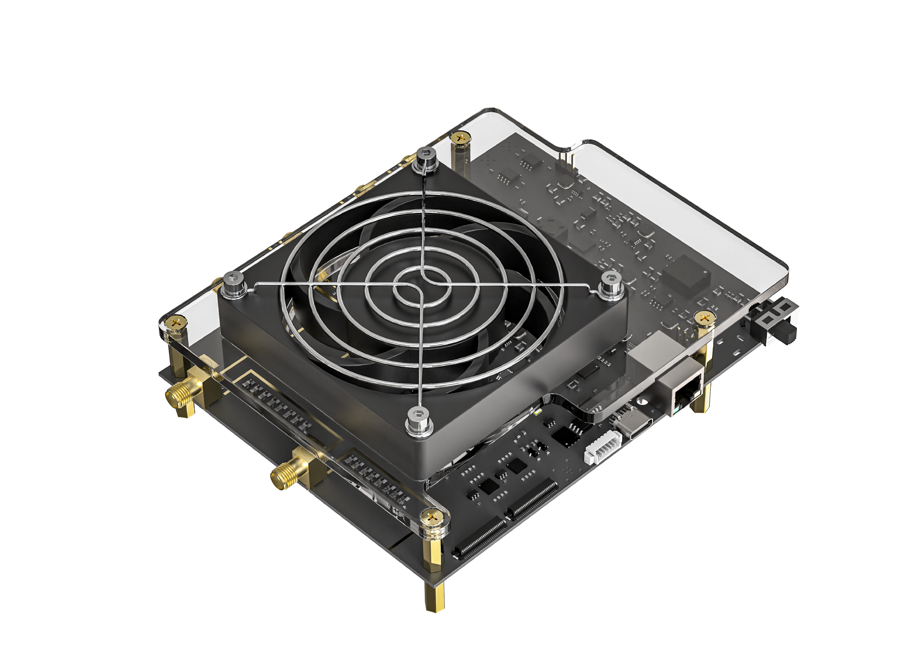

MVT-Pi

MVT-Pi is a multi-channel, plug-and-play measurement platform with a compact design, high performance, and high reliability. Its core advantage lies in simultaneously achieving high-precision time measurement and amplitude measurement, enabling the precise capture and analysis of high-speed electrical signals. With its exceptional parallel processing capability, excellent signal integrity, and stable data transmission performance, MVT-Pi can provide an ideal hardware platform for critical areas such as scientific experiments, industrial inspection, and high-speed signal analysis.
Main Features
- Product Dimensions: 110 mm × 140 mm × 50 mm
- Time Measurement Accuracy: < 25 ps
- Operating Power Consumption: < 10 W
- Pulse Quantization Range: 0~4.1V
- Threshold Step Accuracy: < 1 mV
- Supports External Reset Control
- Supported Channels: 6 (custom expansion supported)
- Maximum Pulse Event Rate: 2 Mcps/ch
- Supports External Clock Input
- Configurable Number of Thresholds, supports up to 16 thresholds
- Output Bandwidth: 1000 Mbps (custom expansion supported)
- Supports Temperature Monitoring